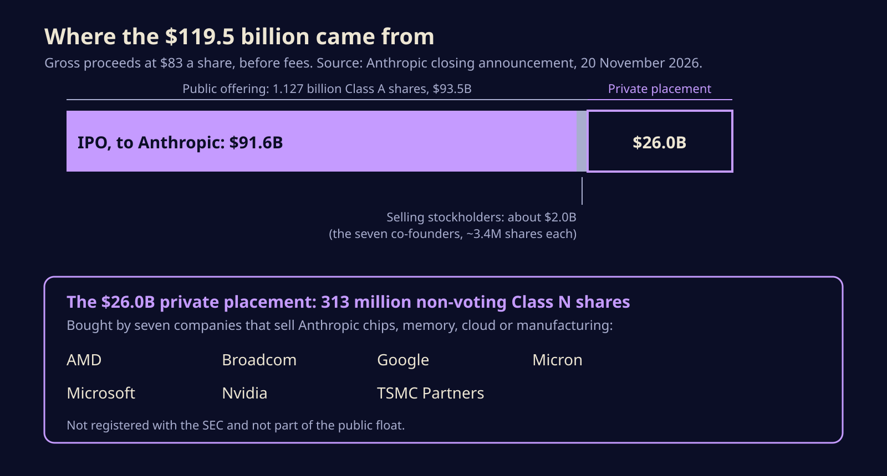
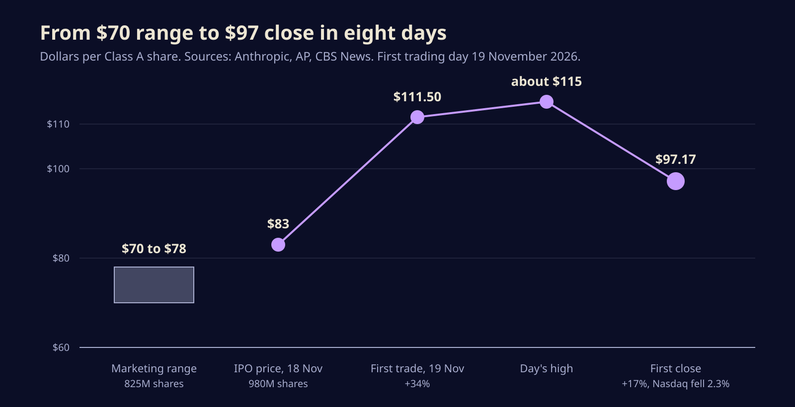

Anthropic's IPO closed at $119.5 billion, and $26 billion came from its own suppliers
The record listing is done, the overallotment was fully taken, and seven chip and cloud companies bought non-voting shares on the side. Here are the final numbers, what the first day of trading said, and why the supplier stake matters to anyone who depends on Claude.
Anthropic closed its initial public offering on Friday, and the final tally is bigger than the headline that ran all week. Underwriters took their full option on 147 million extra shares, pushing the public offering to $93.5 billion, and a private sale of non-voting stock to seven of the company's own chip, memory and cloud suppliers added $26.0 billion more, for about $119.5 billion in gross proceeds.
The base deal alone, $81.3 billion, already beat SpaceX's $75 billion from June as the largest IPO on record. It also means the companies Anthropic pays to build and run Claude now own a slice of it, which is the part worth thinking about if your product runs on its API.
The numbers, from the filing rather than the chatter
The pricing came on Wednesday, 18 November, at $83 a share. Anthropic had marketed 825 million shares at $70 to $78 and ended up selling 980 million at a price above the top of that range, according to AP. At $83 the company was valued at roughly $1.5 trillion fully diluted, up from $965 billion in its May private round, TechCrunch reported.
The closing announcement, dated 20 November, gives the settled figures:
- 1.127 billion Class A shares sold at $83, including the 147 million overallotment shares.
- About $91.6 billion to Anthropic from the public offering. The rest went to selling stockholders.
- 313,253,007 Class N shares sold privately at the same $83 to AMD, Broadcom, Google, Micron, Microsoft, Nvidia and TSMC Partners, about $26.0 billion. These are not registered with the SEC and do not trade.
- Goldman Sachs and Morgan Stanley led a syndicate of 20 more banks.
The selling stockholders were the seven co-founders. TechCrunch reported that each sold close to 3.4 million shares; the share count in Anthropic's own release divides evenly into seven blocks of 3,378,378, worth about $280 million apiece at the offer price. That is a small fraction of their holdings, and with the Class F founder share still carrying a majority of the vote, it changes nothing about who controls the company.

Some early coverage put the total at $107 billion. That figure adds the $26 billion placement to the $81.3 billion base offering and leaves out the overallotment, which had not been exercised when those stories ran. Anthropic's release settles it.
What the first day said
ANT opened on the Nasdaq on Thursday at $111.50, 34 percent above the offer price, CBS News reported. It touched about $115 and then gave back more than half of that pop to close at $97.17, up 17 percent. Sources differ by a few cents on the intraday high, so treat it as approximate.

The fade looks worse in isolation than it was. The Nasdaq Composite dropped 2.3 percent the same day and the Dow lost more than 1,100 points. A new listing that holds a 17 percent gain while the index sinks is doing fine.
Two caveats from the analysts are worth carrying around. Renaissance Capital estimates only 7.4 percent of shares are freely tradable, or up to 9.8 percent counting stock held by non-founder employees, so a thin float can swing the price hard in both directions. And Truist looked at 32 of the biggest IPOs ever and found more than half fell at least 50 percent at some point in their first year, CBS reported.
Why the supplier stake matters
Anthropic told investors it expects to spend about $900 billion on computing power and infrastructure in the coming years, including roughly $70 billion over the next twelve months, according to AP. Much of that money flows to companies on the list that just bought Class N stock.
There is nothing hidden about it; the buyers are named in a press release. But it ties the two sides together more tightly than a normal customer contract does. A chipmaker that owns a few billion dollars of Anthropic has a reason to keep it supplied when capacity is short, and Anthropic has a reason to keep buying from its shareholders. Google already owned about 14 percent and Amazon nearly 15 percent before the deal, TechCrunch reported. Amazon is notably absent from the new placement list.
The people who sell Anthropic its compute are now also betting on its stock.
For developers, the practical reading is mostly good news with a long tail. Committed capital from the hardware side makes it more likely that rate limits keep rising and new models keep shipping on schedule. It also makes Claude's pricing a matter of quarterly earnings now. Anthropic carried $6.2 billion of debt as of 30 September and has never turned a profit under standard accounting, AP noted. Public shareholders will watch gross margin every three months, and gross margin is set by what you pay per token.
What to watch next
- The first earnings report. It will show whether the $16.3 billion first half we covered in the S-1 kept its pace through the third and fourth quarters.
- Pricing and plan changes. Expect the first moves on API prices or subscription tiers to be explained in investor language. Read the changelog alongside the earnings call.
- The lockup. Insider and employee shares are typically barred from sale for a period after a listing. With a float this thin, the day that window opens could move the price more than any product launch.
- OpenAI. It has not filed and is not expected to list until next year, but it now has a price and a playbook to measure itself against.
The bigger picture
The AI build-out has run for two years on money moving in a circle: labs raise from chipmakers and clouds, then spend it with the same chipmakers and clouds. Anthropic's IPO did not break that loop. It put a public market in the middle of it, with a public float of about 7 percent in a company whose biggest owners are also its biggest vendors. That arrangement works while demand grows faster than costs, and from now on everyone gets to check every quarter whether it still does.
Sources
- Anthropic, announcement of the closing of its initial public offering and concurrent private placement
- AP via PBS NewsHour, Anthropic prices its IPO at $83 per share, valuing the AI giant at $1.5 trillion
- CBS News, Anthropic shares gain 17% on first day of trading after record IPO
- TechCrunch, Anthropic prices IPO at $83 a share, above projected range
Written with AI for Bade's Mod Shop. Facts are checked against the sources above on the day of publishing; if one is wrong, open an issue.